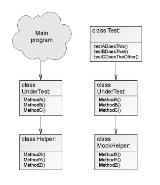

Mocks Aren't (Just) Stubs
My exposure to test-driven software development at Resolver Systems has resulted in a tremendous enthusiasm for the idea. Doubtless a significant proportion of my zeal stems from my own over-compensation for arriving late to this particular party, but nevertheless, I truly believe that it's the most significant evolution the craft of software engineering has had in decades. For thirty years we've had good reason to believe Brooks' assertion that there will be no silver bullet, and now I can't shake the feeling that this is the closest thing to it that we'll ever have any right to expect.
After hearing suggestions from Andrzej on improving our use of mock objects in our unit tests, I did a little reading around the ideas he mentioned. One of the best essays I found was Martin Fowler's piece, entitled mock objects aren't stubs.
Class UnderTest, shown on the left in use by release software, and on the right in a test environment, using stubbed out mock helper classes.
Clearly, the idea of a generic mock object class isn't a brand-new one, and Martin's essay describes several such utilities that have been around for various lengths of time, but it is something I hadn't really thought about until this week. We do use mock objects in our tests at Resolver, in the sense of stub classes. When our class-under-test calls methods on other 'adjacent' classes, then the test will first substitute some mock object, often defined on the spot, to replace the adjacent class. This decoupling of the class-under-test from other adjacent classes keeps the tests simple and orthogonal.
If these mock objects had no methods on them, then the class under test would barf when it tried to call methods on the mock. So we add empty stub methods on the mock, to mimic the method names present on the adjacent class it replaces.
This conventional kind of test works well. State changes within the object-under-test can easily be asserted. Also, state changes to other, mocked objects cannot be directly tested, since the simple stub mocks described above maintain no internal state. In a way, this is fortunate, since such state changes to adjacent objects should not be tested, or at least not by the test under discussion. Those state changes should be implemented by method calls on the adjacent objects, and tested in the adjacent object's own unit test instead.
However, this only emphasises how important it is that, as well as our own state changes, we should also be testing the behaviour of our object-under-test by asserting that it makes the correct method calls to adjacent objects. Not all method calls should be tested though - they can be split into two categories:
- Method calls made to calculate state changes in the current object-under-test.
- Method calls made to inform other objects that they need to update their own internal state.
Method calls belonging to the second category need to be explicitly tested for. At Resolver we often implement such tests using a 'Listener' test pattern, which can be used to assert that a given method on an adjacent object was called with the correct arguments. Martin's essay describes a generic mock object class that can be instructed to assert that particular methods on it were called with particular parameters, and this seems like a convenient pattern, particularly the methods which create appropriately named stub methods on the mock object based upon a given class. We could, I think, use this idea at Resolver in places, if only to cut down on the manual creation of stubbed-out mock classes throughout our test code.
However, the method of testing-by-behaviour that Martin describes does not seem to always be applicable. The first of the two categories of method calls above can and should be tested for by looking soley at the resultant state changes in the object-under-test. It is these state changes which are important, not the methods used to effect them. Asserting that various helper classes were used to make an internal state change only makes the test needlessly brittle to alternative implementations that achieve the same result.
Comments